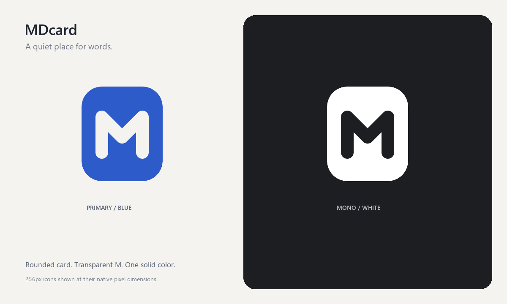
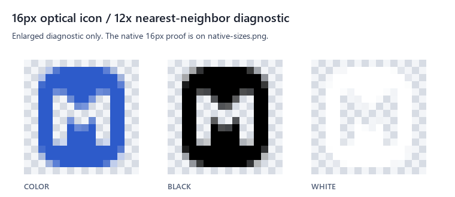

MDcard · 一张卡片，一个 M
平面几何、真实负空间、单一强调蓝。图标源文件与多尺寸资源验收页。

实际尺寸检查规则
下方各个图标的图片像素与 CSS 尺寸逐一相等（1 源像素 = 1 CSS 像素），不做 CSS 放大。浏览器缩放请设为 100%。物理显示像素还取决于操作系统缩放与屏幕 DPR；本页不把 CSS 像素视作所有显示器上的物理像素。窄窗口请横向滚动卡片。上方展示图可缩放，下方逐个图标才用于实际尺寸检查。
下方各个图标的图片像素与 CSS 尺寸逐一相等（1 源像素 = 1 CSS 像素），不做 CSS 放大。浏览器缩放请设为 100%。物理显示像素还取决于操作系统缩放与屏幕 DPR；本页不把 CSS 像素视作所有显示器上的物理像素。窄窗口请横向滚动卡片。上方展示图可缩放，下方逐个图标才用于实际尺寸检查。
浅色背景
彩色主版本
适配背景的单色版本：black
深色背景
彩色主版本
适配背景的单色版本：white
复杂桌面背景（图形模拟）
彩色主版本
适配背景的单色版本：black
16px 光学校正 · 放大诊断
下图中的 16px 图标使用最近邻放大 12 倍，仅用于检查透明边缘、笔画和负空间，不能替代上方 16px 原尺寸检查。
